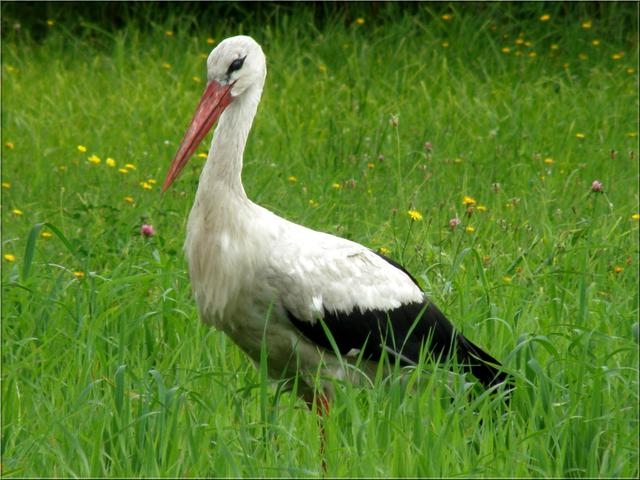

Лелека
Лелека – символ весни та родинного щастя.
Дізнатися більшеСоловей
Соловей – мелодійний співець лісів та садів.
Дізнатися більшеСиниця
Синиця – маленький, але дуже різнобарвний птах.
Дізнатися більшеЛелека – символ весни та родинного щастя.
Дізнатися більшеСоловей – мелодійний співець лісів та садів.
Дізнатися більшеСиниця – маленький, але дуже різнобарвний птах.
Дізнатися більше